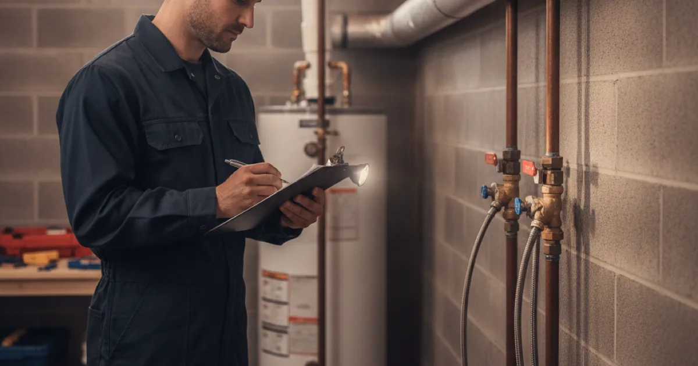

Plumbing Inspection & Maintenance in Westchester County, NY
Most plumbing disasters gave warning signs first. An inspection is simply reading those signs before they become the emergency — especially useful buying an older house.
- Licensed & Insured
- Upfront Pricing
- Clear Explanations Before Work Begins
- 15+ Years of Experience

Buying a house? Get this before you close
A general home inspection is broad and shallow by design — the inspector looks at everything and specialises in nothing. Plumbing gets a visual once-over, not a plumber’s assessment. On an older Westchester house, that gap is where expensive surprises live.
A dedicated plumbing inspection before closing tells you what you are actually buying: the condition of the supply piping, whether it is copper, galvanised, or something with a known failure history like polybutylene; the state of the water heater and its likely remaining life; and, on an older property, whether the sewer lateral is sound or full of roots. Any of those can be a five-figure difference, and knowing before you close means you can negotiate rather than discover.
A sewer scope is worth pairing with it on an older house — a camera down the lateral finds the root intrusion and breaks a walkthrough never will.
Under contract on an older home?
A plumbing inspection before closing is cheap insurance.
What an inspection covers
A plumbing inspection is a systematic look at everything that can fail, rather than waiting for one of them to.
- Supply piping — material, condition, signs of corrosion or past repairs, and pressure.
- Visible waste and vent lines, and how well everything drains.
- The water heater — age, condition, safe operation, and the relief valve.
- Fixtures and connections — leaks, drips, worn shut-off valves, and running toilets.
- Shut-off valves, including whether the main actually closes when you need it.
- Any signs of hidden leaks — damp, staining, corrosion, and where useful the same tools we use for finding leaks during an inspection.
- The sewer or septic connection, at least externally, with a scope recommended where warranted.
You get a plain-language picture of what is fine, what to keep an eye on, and what needs doing now — with honest priorities rather than a list designed to sell work.
The maintenance that prevents the calls
A surprising share of emergency calls trace back to something that a few minutes of maintenance would have caught. The high-value items are not glamorous:
- Flush the water heater yearly to clear sediment — the single best thing for its life.
- Test the main shut-off so you know it works before the day you need it in a hurry.
- Check washer hoses and replace old rubber ones with braided steel before one lets go.
- Test the sump pump before the wet season, not during it.
- Look for small leaks under sinks and around the water heater while they are still small.
- Winterise outside taps before the first freeze.
Most of these you can do yourself, and we would rather you did. Family Handyman has a practical seasonal plumbing maintenance checklist worth working through. For the items that need a professional eye, that is what an inspection visit is for.
What an inspection costs
A plumbing inspection is priced as its own service and is inexpensive relative to what it can save you from, particularly before buying an older house. Pairing it with a sewer scope on a property with mature trees is money well spent.
You get a plain-language picture of what is fine, what to watch, and what needs doing — with honest priorities rather than a list designed to sell work. A report padded with unnecessary jobs is exactly the opposite of how we want to be thought of locally.
The maintenance worth doing yourself
A surprising share of emergency calls trace back to something a few minutes of maintenance would have caught, and most of it you can do yourself — we would rather you did.
Flush the water heater yearly to clear sediment, test the main shut-off so you know it works before you need it, replace old rubber washer hoses with braided steel, test the sump pump before the wet season, and winterise outside taps before the first freeze. The professional visit is for what genuinely needs one.
Common questions
Isn’t a home inspection enough when buying?
A general inspection covers plumbing broadly but shallowly. On an older house, a dedicated plumbing inspection — and a sewer scope — catches the expensive things a general once-over is not designed to find.
How often should I have my plumbing inspected?
For a typical home, there is no need for a routine schedule — inspect when buying, after a problem, or if the house is old and you have never had a proper look. We would rather you spent on it when it is useful than on a calendar.
Will you just find a list of things to sell me?
No. You get honest priorities — what is genuinely fine, what to watch, and what needs doing — because a report padded with unnecessary work is exactly the opposite of how we want to be thought of locally.
Can I do the maintenance myself?
Most of it, yes, and we will happily point you at how. Flushing a heater, testing a shut-off, swapping washer hoses — all within reach. The professional visit is for what genuinely needs one.
How long does an inspection take?
Usually an hour or two for a typical home, longer with a sewer scope or a larger property. You get the findings clearly, not buried in jargon.
Know before it fails
Licensed, insured, and giving you honest priorities.